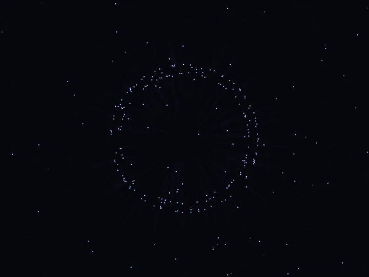
Emerge
漂散的微光彼此靠近，在等待之后凝聚成第一道环。
AN EVOLVING VISUAL STUDY
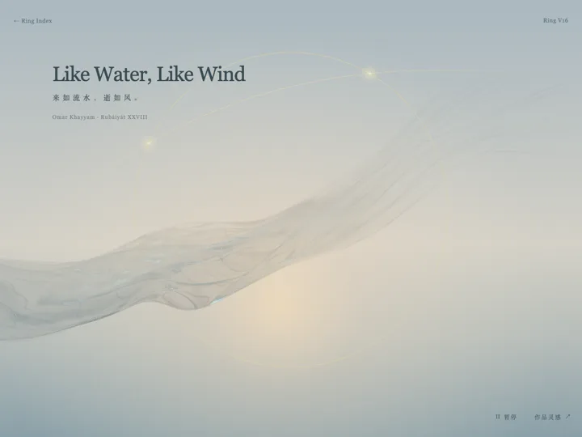

漂散的微光彼此靠近，在等待之后凝聚成第一道环。
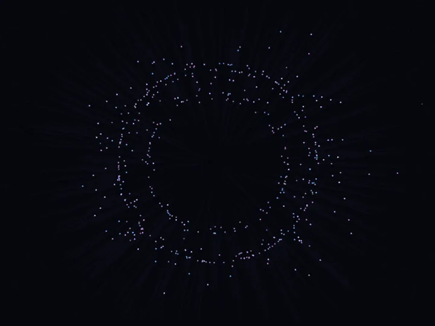
同一群粒子凝聚为内外双轨，在相邻的秩序中共存。
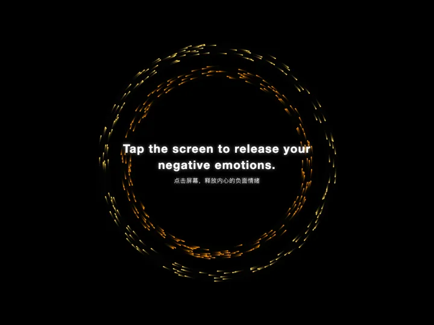
金色双环相向旋转；点击屏幕，让负面情绪爆裂、转紫并消散。
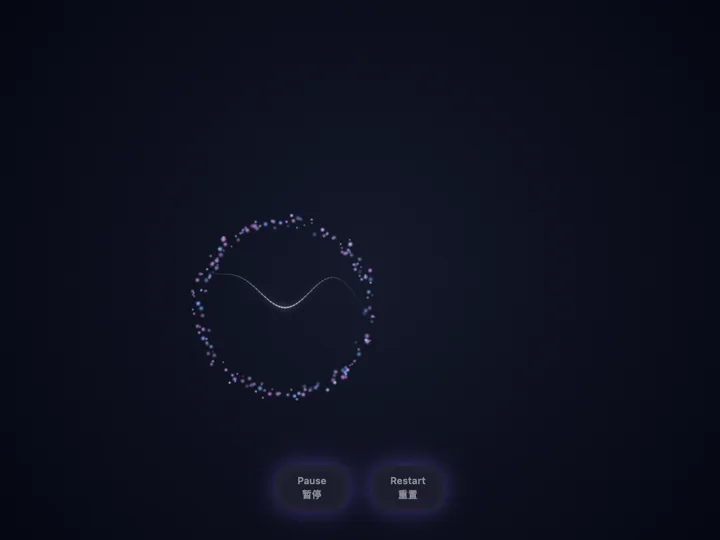
一枚呼吸的粒子环沿复合波前行；高处与低处交替，起伏也成为路径。
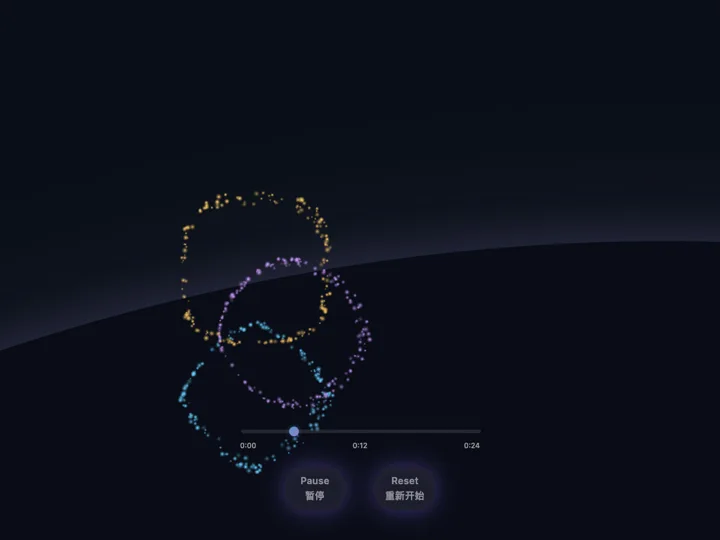
三条拉梅曲线最终汇成一环，粉色光点随之浮现，像旅途中一次短暂相遇留下的余光。
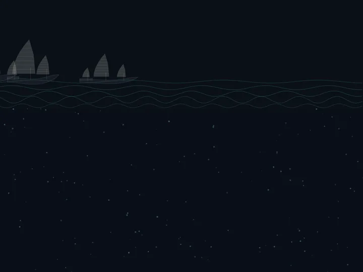
一次关于沉船的凝视，被转译成水面上下两层时间；光环游移，等待遗迹被发现。
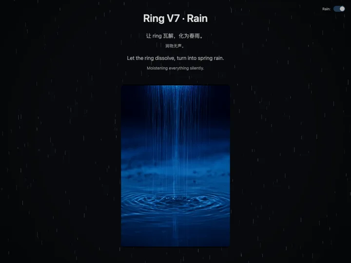
让环瓦解成一场春雨，润物无声。
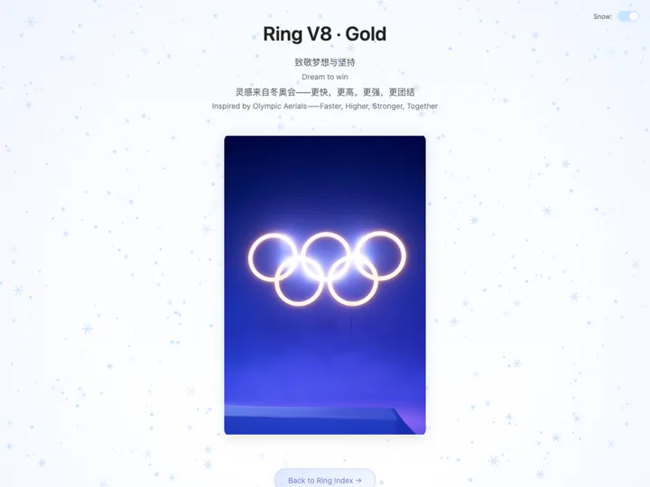
冬奥赛场的一次腾空与落地，让漫长的坚持最终显出金色。
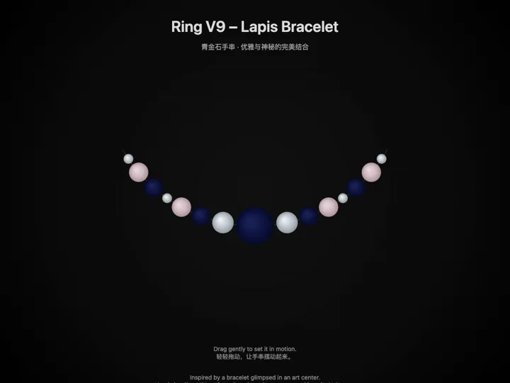
一串未被带回家的手串，留在屏幕中；青金石、贝母与珍珠仍在光下转动。
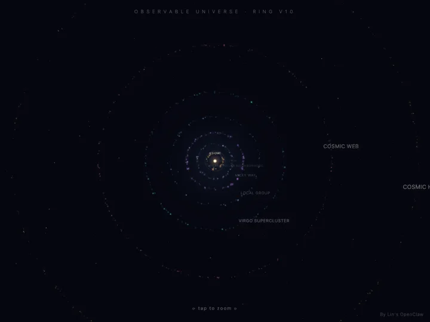
从书店偶遇的一种宇宙尺度出发，层层同心环向可观测世界的边界展开。
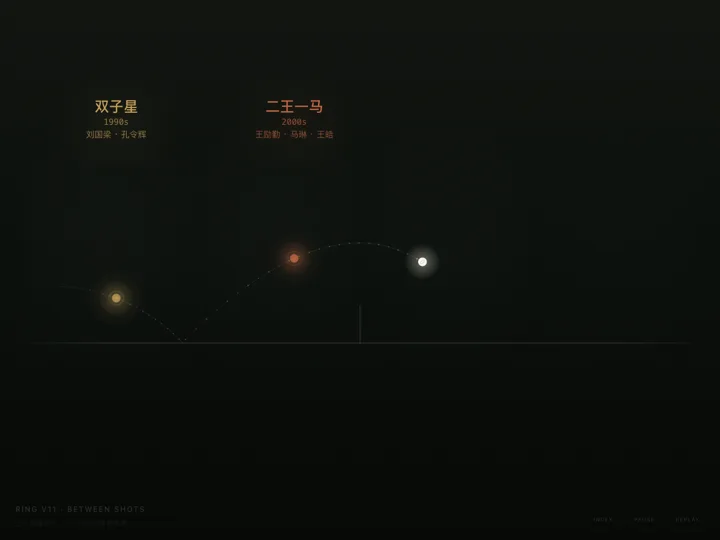
三个辉煌时代，一个仍待回答的未来；击球之间，传承仍在继续。
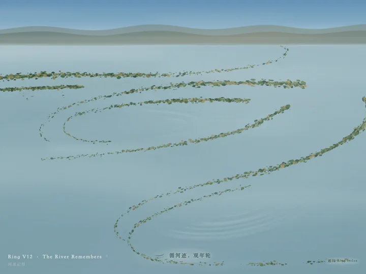
额尔古纳河的迁移、沉积与植物洲体，在河漫滩上留下层层展开的时间年轮。
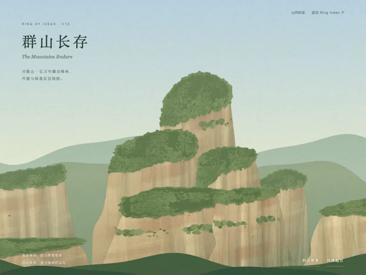
兴隆山的柱状峰林间，岩层与绿意层层相绕，在漫长时间里留下环的形状。

那一眼太阳 · 把目镜里的太阳、天文台的记忆与一枚宇宙像素，收藏在复古窗口里。
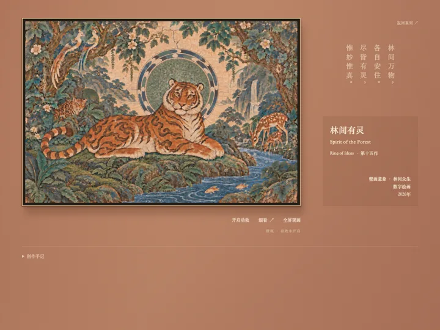
取意古壁画的矿物色与奇特圆光，让虎与林间众生各自安住。
来如流水，逝如风 · 从海亚姆的诗句出发，让水与风在淡金几何之间流转。
ABOUT THE SERIES
Ring 最初从粒子、轨迹与几何结构出发，逐渐将探索延伸至自然景观、光影和诗歌意象。
没有预设的视觉风格，也没有固定的创作边界。每一件作品，都是一次独立的尝试，也是这个系列持续变化的痕迹。